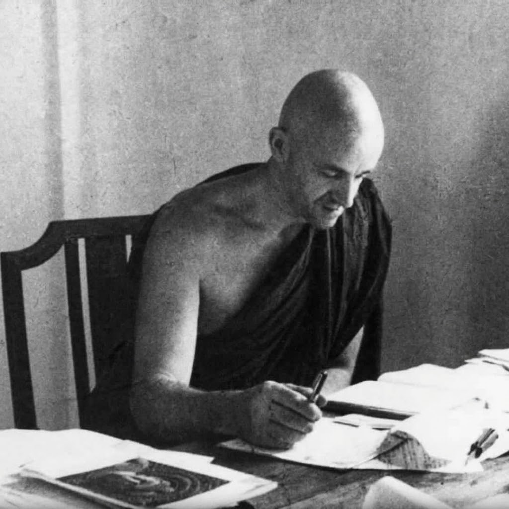
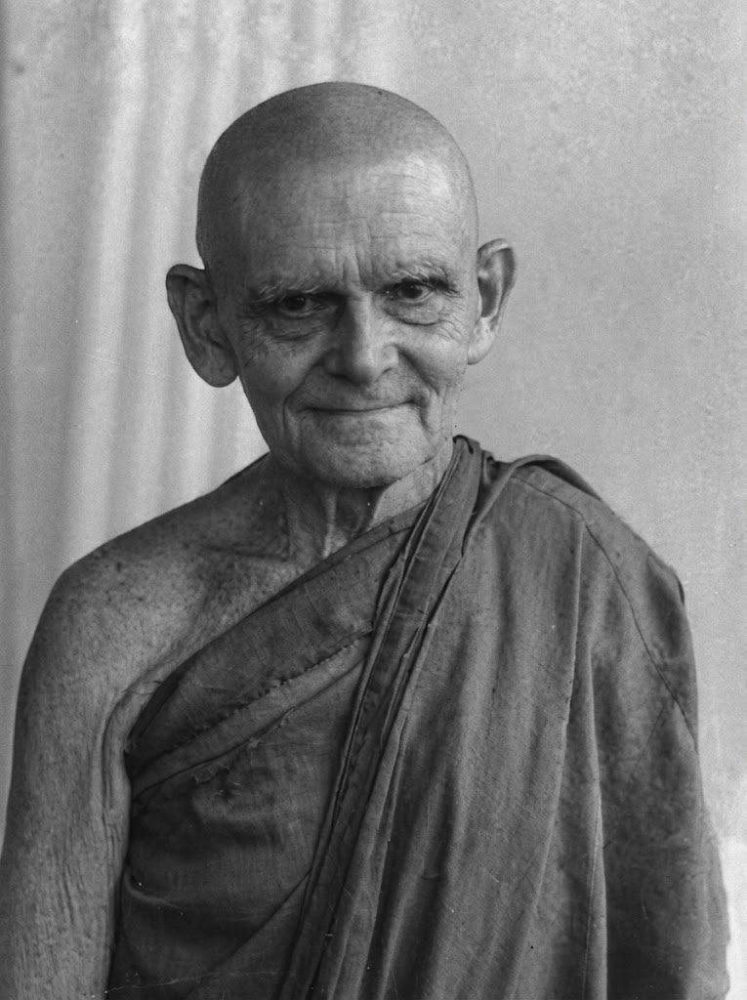
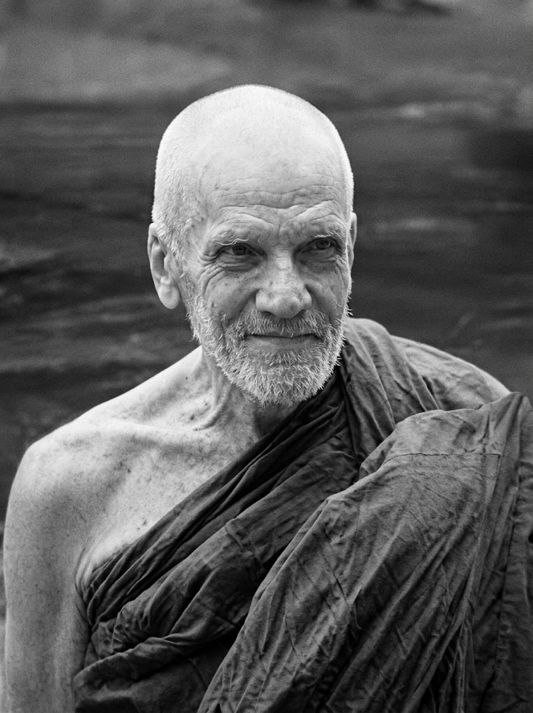

Born Anton Walther Florus Gueth in Wiesbaden, Germany. In 1903/04 in Burma he became the first continental European to enter the Theravada Sangha. On 9 July 1911, he founded the Island Hermitage at Polgasduwa, creating a haven for meditation and scholarly translation. His works include The Word of the Buddha, Buddhist Dictionary, and translation of the Milindapañha.
Read Comprehensive Biography
Born Siegmund Feniger in Hanau, Germany. Ordained at Polgasduwa by Ven. Nyanatiloka in 1936. A scholar of the highest caliber, he authored the landmark work The Heart of Buddhist Meditation, which introduced Satipatthana Vipassana to the global public. He served as the lifelong editor and president of the Buddhist Publication Society (BPS) in Kandy, publishing hundreds of Dhamma works read across the globe.

Born Osbert Moore in England, an Oxford graduate and BBC broadcaster. He arrived in Sri Lanka in 1949 and was ordained at Polgasduwa under Ven. Nyanatiloka in 1950. Within just a few years of intensive study in his island kuti, he mastered the complex Pali canonical idiom, producing the definitive English translation of The Path of Purification (Visuddhimagga), as well as translations of the Majjhima Nikaya, Nettippakarana, and The Life of the Buddha.

Originally from Germany (born Moller), he was the first German trainee sent by the German Dharmaduta Society and the very last European monk directly ordained by Most Ven. Nyanatiloka at Island Hermitage. He lived for over half a century in deep ascetic seclusion at Polgasduwa, practicing boundless loving-kindness (Metta) and strict renunciation. He was dearly cherished by the villagers of Dodanduwa until his passing in October 2005 at age 85.

One of modern Sri Lanka’s most revered Dhamma luminaries. Formerly an assistant lecturer in Pali at the University of Peradeniya, he renounced worldly academic life to take robes at Island Hermitage in 1967. While residing at Polgasduwa, he authored Concept and Reality in Early Buddhist Thought and delivered the celebrated 33 sermons on Nibbāna – The Mind Stilled, recognized worldwide for their profound psychological clarity.

One of modern Sri Lanka’s most revered Dhamma luminaries. Formerly an assistant lecturer in Pali at the University of Peradeniya, he renounced worldly academic life to take robes at Island Hermitage in 1967. While residing at Polgasduwa, he authored Concept and Reality in Early Buddhist Thought and delivered the celebrated 33 sermons on Nibbāna – The Mind Stilled, recognized worldwide for their profound psychological clarity.